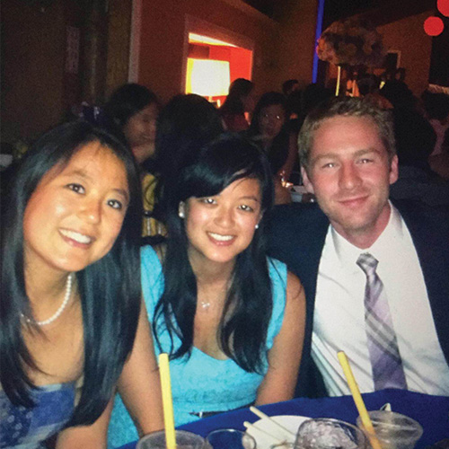

Our Story
A little history of our relationship.
-
Growing Up
Paul and Minori lived on Glezen lane growing up as two kids — a boy obsessed with his army gear and a girl who barely spoke English. They both attended Red Barn School for pre-school, at which Paul has a memory of themselves playing on the swing set together as their mothers talked.
-
Highschool
Paul and Minori spent High school in different circles. Minori was the nerdy girl who taught piano and hung out with the AP math teachers, while Paul spent his time baking pies and playing guitar.
-
College
Once they graduated Wayland High, Paul could not wait to get out of the town and went to USC in Los Angeles. Minori stayed close to her family and her close knit friends from Wayland and attended Boston University. They both turned out to be nerds, (surprise!) and went on to get a degree in Engineering.
-

A surprise reunion
Minori and Paul both attended yet another neighbor, John Jaques’ wedding where Paul swears Minori couldn’t resist him; Minori disagrees. John (read: Thutrang) decided to seat them at the same table in the hopes of kindling a romance. Who would have thought it actually worked!
-
Fitness Partners
They started dating and connected over there ridiculous goals of Minori’s marathon and Paul’s Half Ironman. They found fitness to be a perfect way to bond (and allow themselves to eat more).
-
World Travelers
As things got more serious, they shared their love of traveling. Their first trip was a Christmas in NYC, and their second was a journey to Tokyo, where Paul met Minori’s grandparents.
-
Engagement
At their most recent NYC trip, Paul proposed to Minori at Central Park. Since you’re reading our wedding website, it’s safe to assume she said “Yes.” Come join us for the next moment in our timeline on April 22nd at the Andover Country Club.
-
Be part
of our
story!